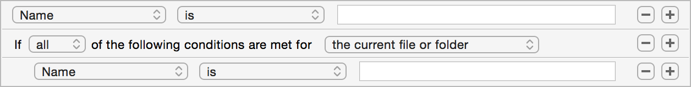

Creating rule conditions
Conditions are how you can tell Hazel which files or folders should match the rule. When the file passes the conditions you specify, the actions of the rule are executed on the file or folder in question. Hazel provides various powerful mechanisms to allow you to do this.
The pop-up allows you to indicate which of the conditions need to match for the file/folder to pass the conditions as a whole. Here you can specify "any" (at least one condition needs to match), "all" (all the conditions must match) or "none" (not a single one of the conditions can match).
Nested conditions
To add more power and flexibility to conditions, Hazel allows you to create nested conditions. This allows you to mix conditions using different specifiers and targets together into the same rule.
To create a nested condition:
- Hold down the alt/option key. The plus (+) button will change to show ellipses (…).
- Click on the ellipses button above where you want to create the nested condition.
- Hold down the plus button for the condition above where you want to create the nested condition. While holding the button down, you will see an indicator and then a menu with extra options.
- Select "Add nested condition".
Condition target
Nested conditions have a second pop-up that tells Hazel to which file or folder to apply the conditions. Most of the time, you want this set to "the current file or folder". There are cases, though, where you want a file or folder to be evaluated based on its subfiles or enclosing folder. The different targets are as follows:
- the current file or folder
- This is the default. This refers to the file or folder referenced by the outer condition. If the outer condition is the top-level condition, then the conditions under this heading will match the file or folder currently being processed. If the outer condition is specified to match any sub-file, then the conditions under this heading will apply to those subfiles as well.
- any sub-file or folder
- This matches the folder being matched if at least one sub-file or sub-folder passes the conditions under this heading. For example, you can use this to match a folder if any of its subfiles are colored orange. Note that these conditions do not apply to the folder being processed itself. Also, if this target is applied to a file (not a folder), it will not match since files do not have sub-files.
- all sub-files and folders
- This matches the folder being matched if at every sub-file and sub-folder passes the conditions under this heading. You can use this, for example, to perform an action on a folder if all it's subfiles are older than a certain age. Note that these conditions do not apply to the folder being processed itself. Also, if this target is applied to a file (not a folder), it will not match since files do not have sub-files.
- enclosing folder
- This matches the folder which contains the file or folder being matched. This can be used, for instance, to perform actions on a file based on whether its parent has a certain name.
Keep in mind that regardless of this setting, the actions are always performed on the file/folder currently being processed. So, even if the rule is being matched against folder A, and the conditions are being applied to its enclosing folder and its subfiles, the actions will always be applied to folder A. If you need to apply actions to a folder's subfiles, see the article Descending into Folders for more information.